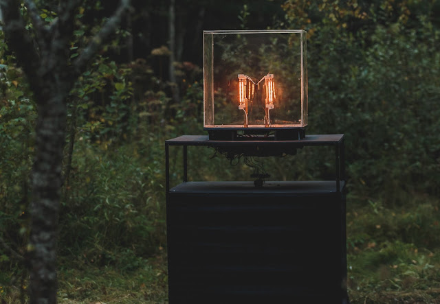

INSTINKT
Interactive light-sound art installation with AI

The installation affects a person at his instinctive level, just as a person affects the installation. The work employs artificial intelligence to respond to viewer proximity, using neural networks to determine light intensity and sound characteristics for self-defense mechanisms.
Technical Equipment
Hardware: 4kW lamps, IR Lidar, Raspberry PI, Arduino, 4 Speakers
Software: TensorFlow, Python, OpenAI Gym, Puredata
Exhibition Venues
- Chronus Art Center, Shanghai, China
- "Signal" festival, Nikola-Lenivec